What it does
Your course notes become a real website. Fast, searchable, and readable on desktop or mobile devices.
Why it exists
Sharing one handout with one class shouldn't take a dozen clicks.
But it usually does. Find the course. Find the unit. Choose a category from a dropdown, a date from a picker, a visibility setting from another dropdown. Save. Check that it worked.
Plantoir removes that friction. Your notes are the website. You focus on writing; publish to students with a single click.
See it before anyone else does
Preview builds the real site and shows it inside the app window.
Not an approximation — the same site your class would get, built the same way. Right down to the equations. What you see in the preview is what they see when you publish.
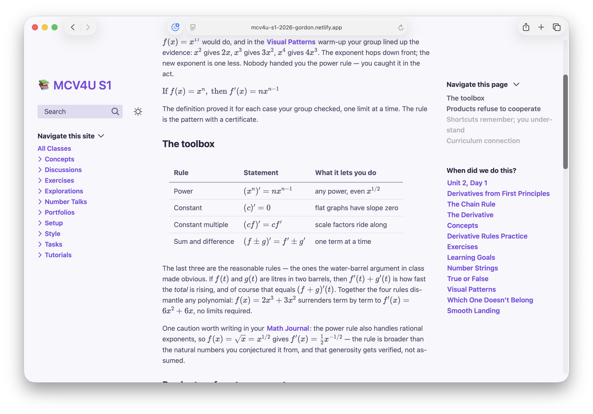
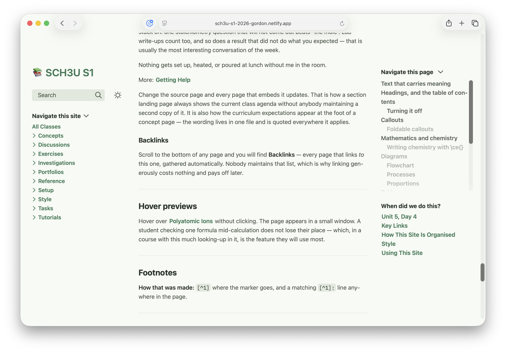
A course that starts ready
A course code is enough to start.
For 38 Ontario courses, and one British Columbia course, Plantoir has a ready-made course: the pages, the folders, and the Ministry's expectations, in place in one step. You keep, change or delete any of it.
For about 1,900 other Ontario courses, you get a starting outline that suits the subject — a drama course opens with conventions and warm-ups, a chemistry course with investigations and lab safety. Turn down the ready-made pages and you get that outline instead, with the curriculum expectations still there, so the coverage map works from the first day.
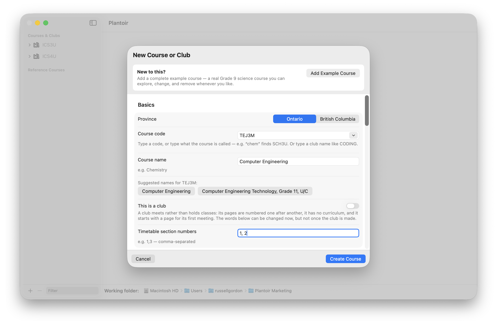
It shows you what you've covered
Tag a lesson with the curriculum expectations it addresses, and every build draws a map of the course: each expectation shaded by how many pages reach it.
It is built from your own pages, so it cannot drift from the course the way a planning spreadsheet does — and the pale squares tell you in February what you would otherwise find out in June.
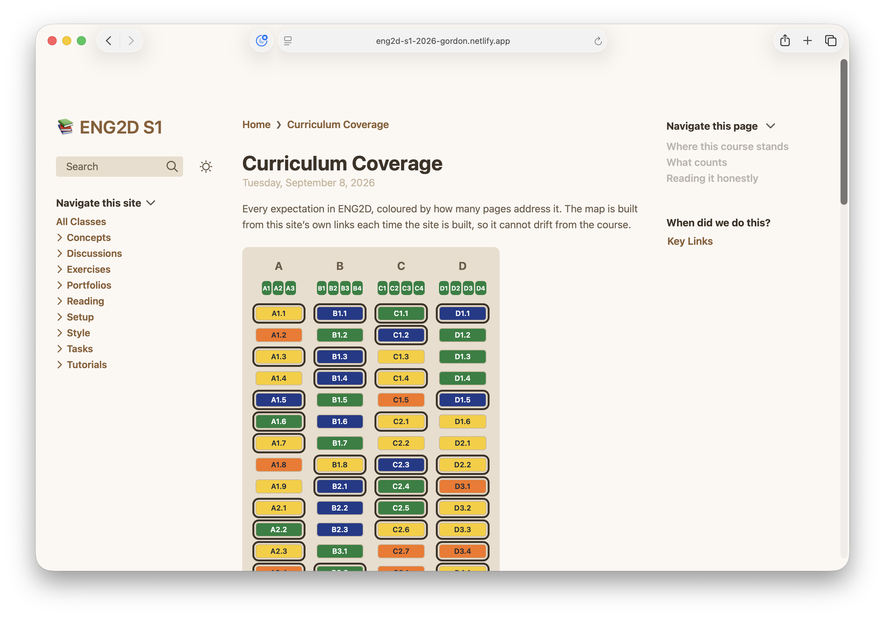
A ready-made course arrives with the Ministry's expectations already in place as pages you can link to, so the map has something to show from the first build.
Two curricula, two maps
Some courses answer to more than one curriculum. An ICS3U class that also prepares students for AP Computer Science Principles is one.
Put each curriculum in its own folder, tick it in Course Settings, and every build draws a map for each: one for the Ministry's expectations, one for the other framework, each shaded by the pages that reach it.
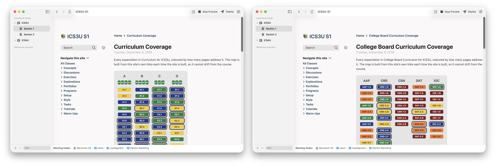
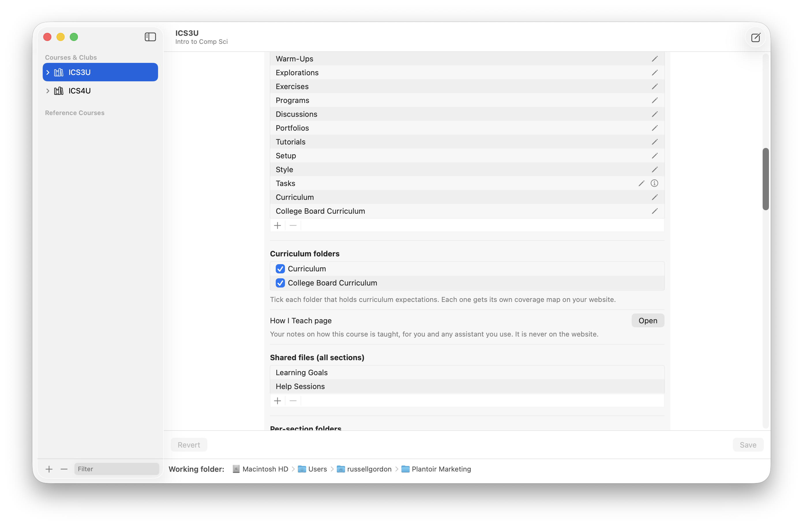
A lesson can reach both. Its curriculum connection quotes an Ontario expectation and an AP learning objective one after the other, and each map counts it.
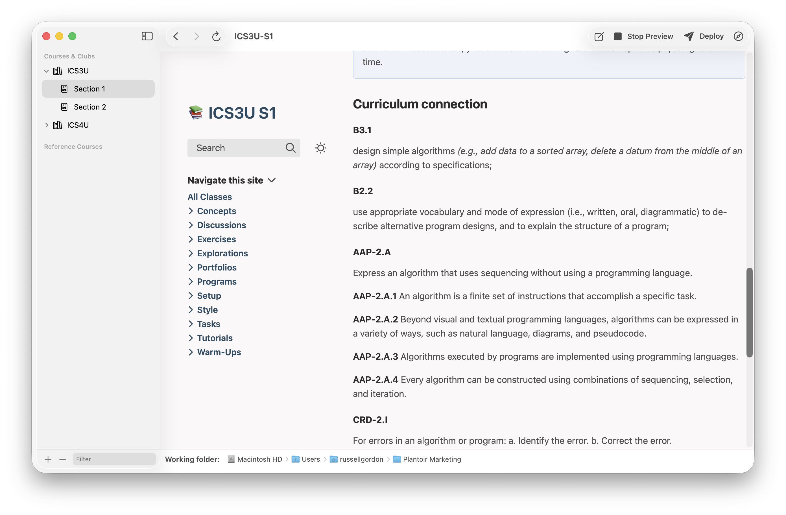
Starting a second curriculum from nothing? Support says how — and Claude or Codex can draft the pages for you to check.
Last year's course, beside this year's
Keep a copy of a course for reference before you change it for a new year, or bring in last year's working folder whole. Reference courses sit in their own group in the sidebar, filed by school year.
You can read them, preview them and open them in Obsidian. You can't publish them — there is no Deploy button, and every other way of publishing refuses — and their pages are locked, so nothing changes them by accident.
When a page from last year is exactly what you need, copy it into the course you're teaching. Its pictures come with it, the pages it links to can come too, and it always arrives hidden from students until you publish it.
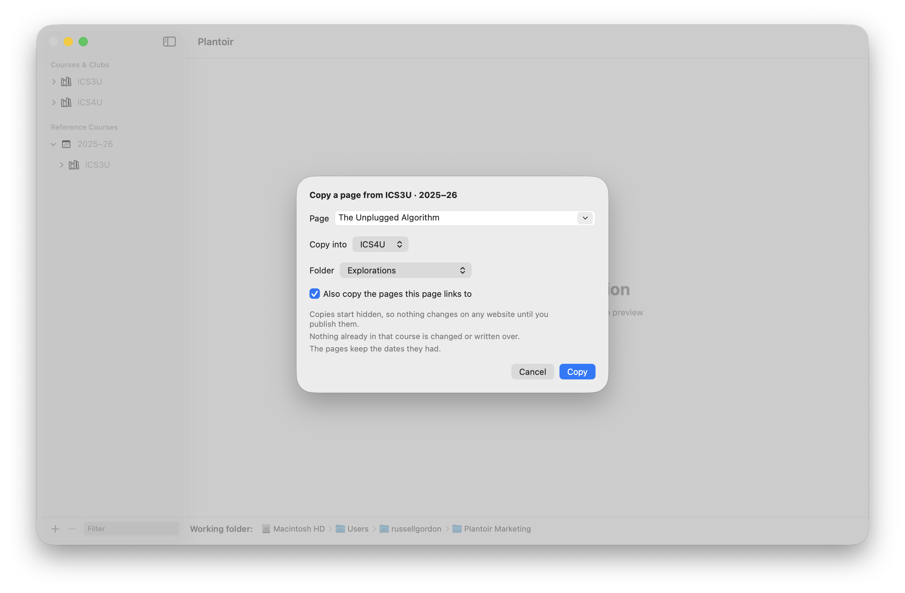
You can just ask
An assistant runs on your own computer, as part of the app. "Publish Thursday's class for section 2." "Hide Unit 4, Day 12 — we didn't get to it." "What would students see right now?"
It tells you what it's about to do and waits for you to say go. Nothing you write is sent anywhere, there's no account and no cost per request, and you can leave it switched off entirely.
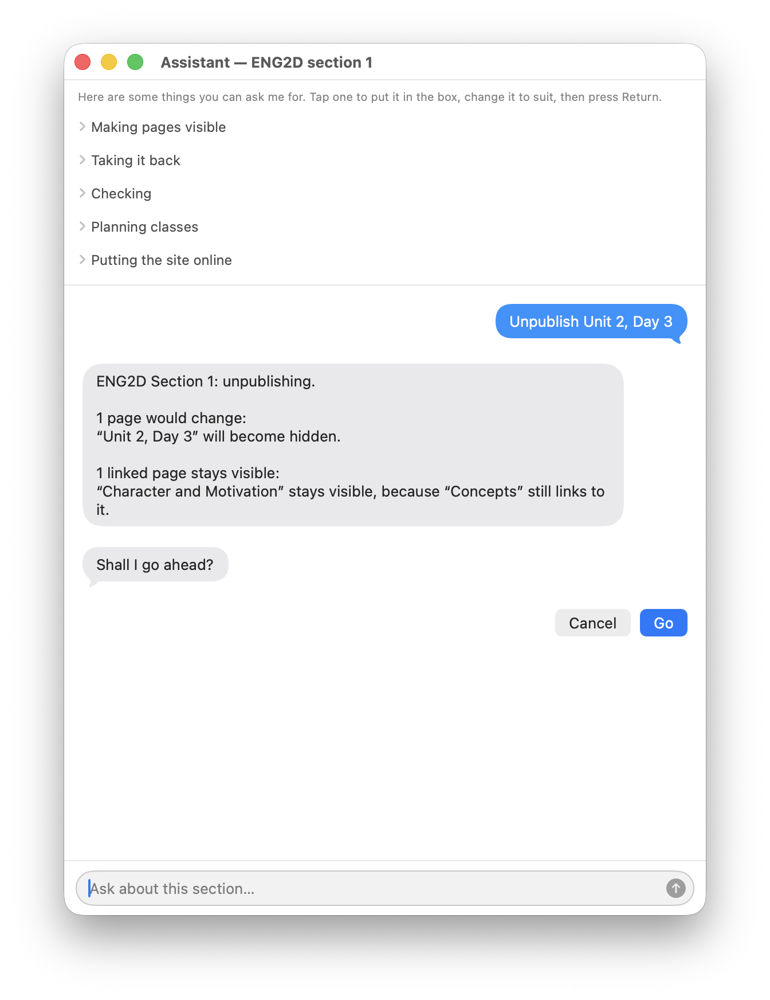
It exists to take the fiddly parts off your hands — the page-by-page settings that decide which class sees what. How that works across a week is worth five minutes if you teach more than one section.
Or work with Claude or Codex
If you already use Claude or Codex, right-click a course and choose Revise with Claude… or Revise with Codex… from its menu. The session opens knowing your working folder and the course, and it can read and change your pages the way Plantoir itself does — Codex asks your permission before it changes anything.
Tell it how you teach first. A page called How I Teach, at the top of the course, is read at the start of every session: your units, your assessment habits, the words you use with students. Write it yourself, or ask for a draft from your own pages and correct it. It is never put on your website.
These open a program you installed and signed in to yourself. What it reads goes to that company's service under your account; Plantoir sends nothing there on its own.
Students can search the whole course
A student who half-remembers a definition doesn't have to guess which week it was in.
One box searches every page of the course — titles and body text — and shows the match in context before they click. It works on the phone in their hand, and it needs nothing from you: the index is built with the site.
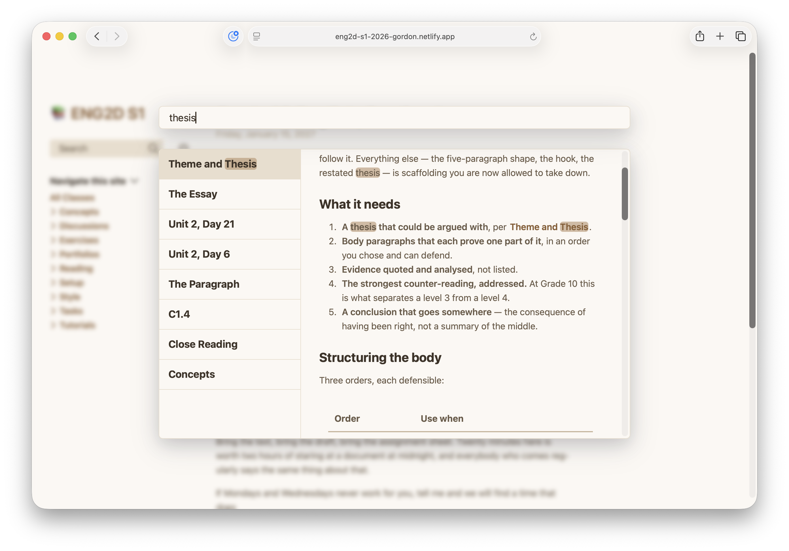
It reads properly on a phone
Which is where a good deal of it will be read: on the bus, at the back of the room, at eleven at night.
The navigation folds away, the type stays the right size, and the search still works. There's no separate mobile version to keep in step, because there's only one site.
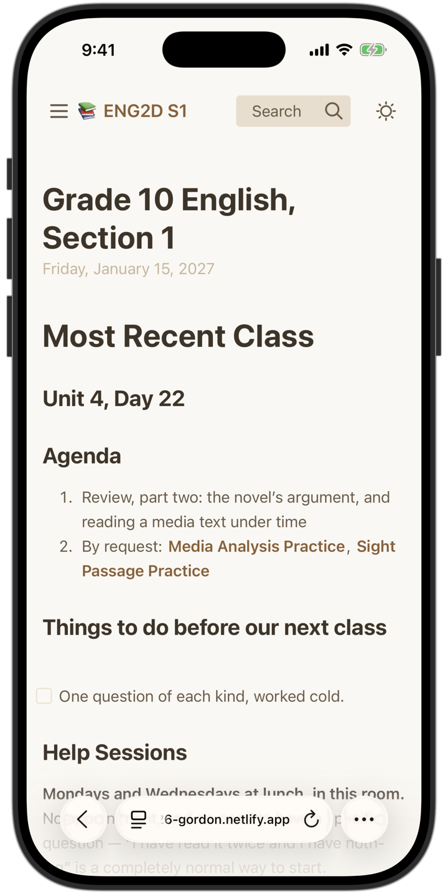
And the rest of what a page can carry
- Mathematics set properly. Equations are typeset, not pasted in as pictures — chemistry notation included.
- Diagrams drawn from your notes. A flowchart or a timeline is a few lines of text, drawn when the site is built. Fixing it means fixing a sentence.
- Code with syntax highlighting, alongside images, video and PDFs.
- Pages that link to each other, so a lesson points at the concept behind it and the concept lists the lessons that used it.
- Tables, with links inside them that work like any other.
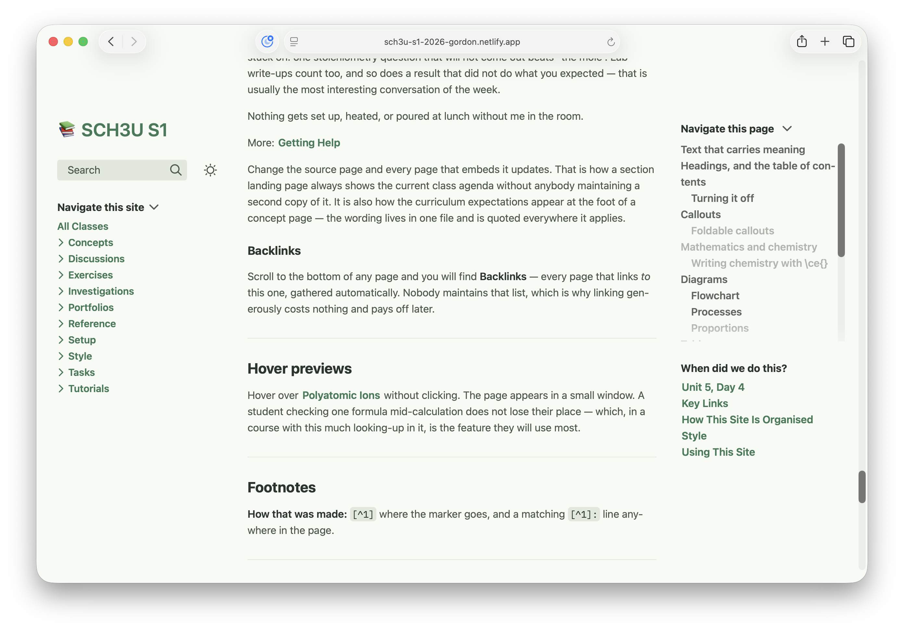
Styled the way you like it
Each course and each section can have its own distinct colours and typefaces, if desired.
You choose in the app and see a live sample before anything is built.
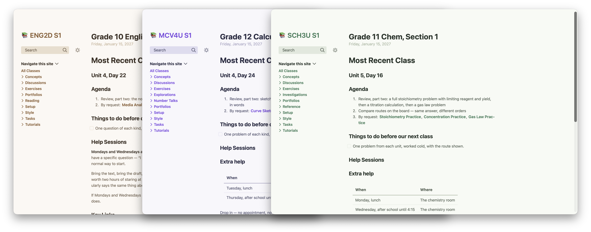
Each site has an automatic light and dark mode theme of its own.
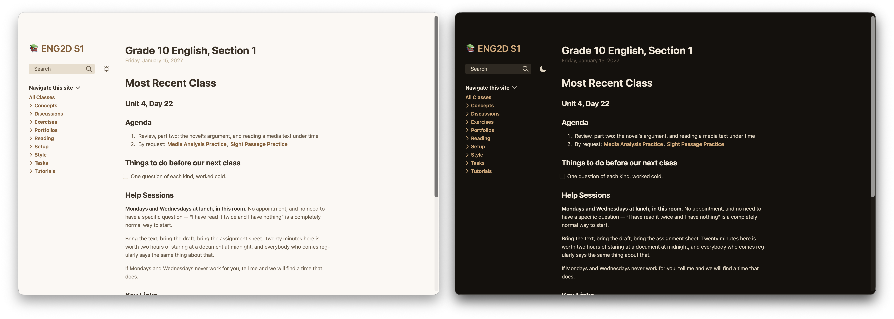
Clubs, too
Not everything you run is a course. Tick "This is a club" when you add one and it starts the way a club does: an empty set of folders, a first meeting page, and a front page headed with your own words — "Most Recent Meeting", say. Meetings are numbered Week 1, Week 2, and the assistant talks about meetings, not classes.
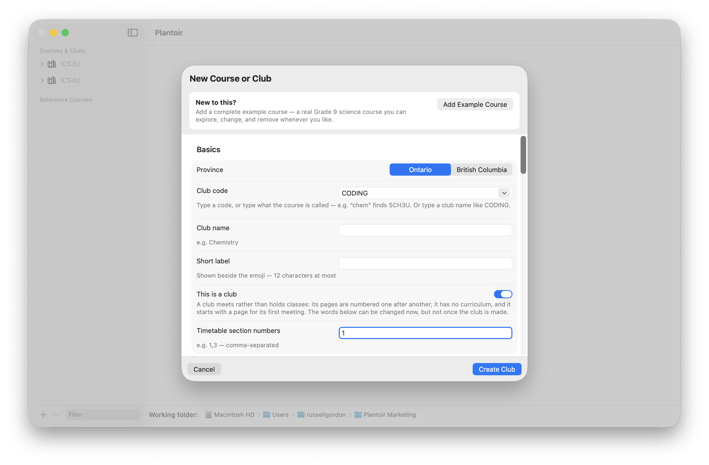
Publishing
Send a finished section to a free hosting service, to your school's own web space by way of an ordinary folder, or to a paid host — whichever your school allows.
The address doesn't change from one publish to the next. A link you hand out in September still works in June.
You can also publish on a schedule. Prepare a section on Sunday evening, and it publishes itself on Monday morning — how that works.
Have a look
These are real class sites, built from the ready-made course material and published exactly the way you would publish them.
- ENG2D English, Grade 10
- MCV4U Calculus and Vectors, Grade 12
- SCH3U Chemistry, Grade 11
What you need
A Mac or Windows PC
macOS 15 or later (Apple silicon) or Windows 10/11 (64-bit). It keeps itself up to date — see Updates.
An internet connection, at the start
The first run downloads what the site builder needs — a few minutes. After that, writing, building and previewing all work offline. Publishing needs a connection again.
Somewhere to put the site
A free hosting account, or a folder on a school web server. Neither costs anything to try.